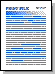

Use the following procedure to print with black and one of CMY color toners.
This method is useful when you want to improve the readability of documents
or to emphasize specific points, except when printing data with photographs,
which should be left true to the original. Printing in two colors saves
printing costs and enables document creation with effective usage of colors.
If you want to print with only specific CMYK color(s), use the Separate into CMYK, then Print in Designated Color Only
function.
Depending on the printer you are using, this function may not be available.

Example: When Black & Cyan is selected
Note:
This function is unavailable with black and white printers.
Open the printing preferences dialog box after creating a document in an application.
Click the Frequently Used Settings tab or the Basic menu on the Detailed Settings tab.
Select Color in the Color/ Black and White: list.
Click the Print Quality:Standard menu on the Detailed Settings tab.
Select Advanced Settings in the Adjust Image Quality/Color.
Select a combination of toners to be used for printing in Two-color: list.
After making any other necessary settings, click OK to close the printing preferences dialog box.
Start printing.